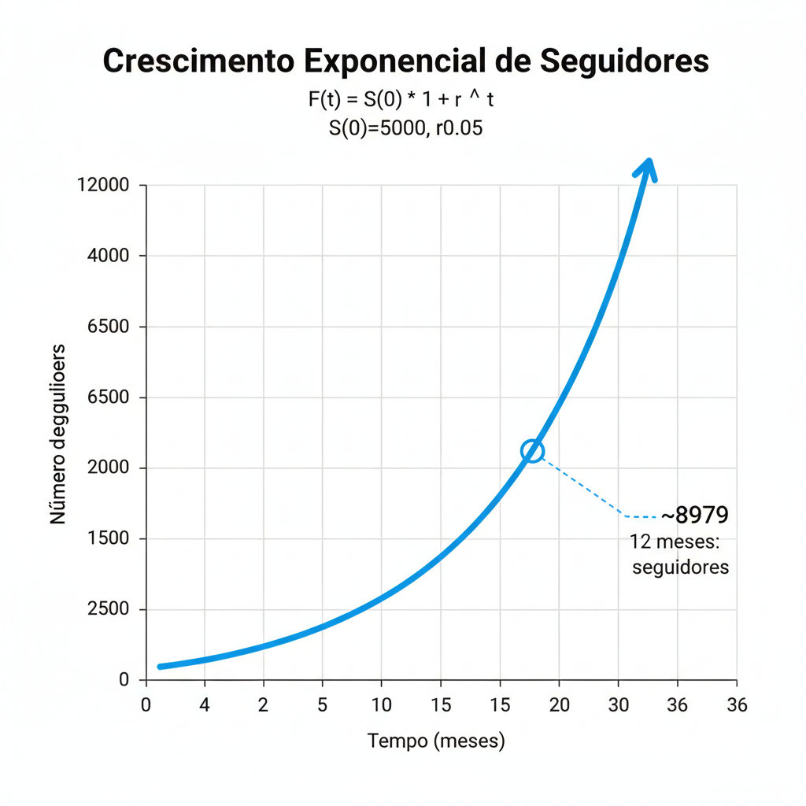
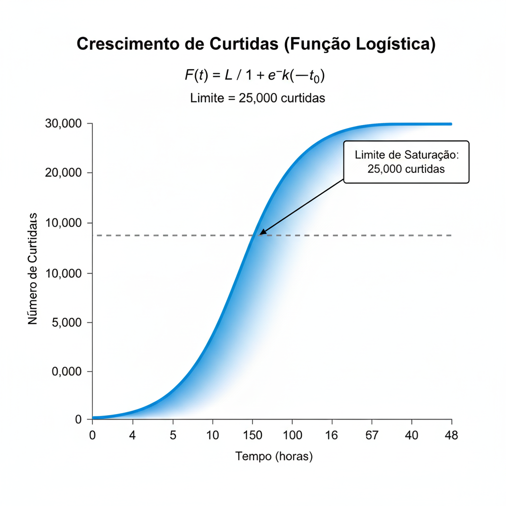
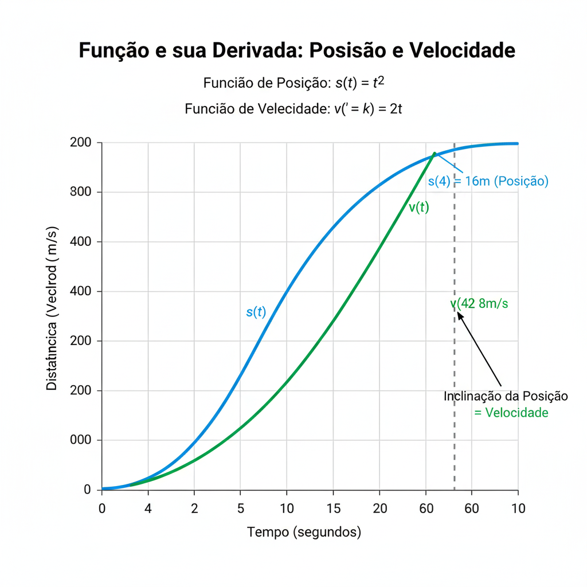

Introdução
Hoje em dia, os números mandam muito no esporte. A matemática é a chave para entender tanto o que acontece dentro de campo quanto fora dele, como o impacto nas redes sociais.
Modelos matemáticos, como o crescimento exponencial, a função logística e até o cálculo de derivadas, ajudam a explicar desde a velocidade de um chute até como um post viraliza. Esses dois lados – o desempenho físico e o engajamento digital – estão totalmente ligados.
Um gol no último minuto, que pode ser medido em termos de velocidade instantânea pela derivada, pode gerar uma enxurrada de curtidas e seguidores, seguindo uma curva de crescimento acelerado. Usando essas ferramentas, atletas, treinadores e até gestores conseguem tomar decisões melhores, ajustar estratégias e ganhar vantagem no esporte moderno.
1. Crescimento de Engajamento: O Modelo Exponencial
Funções exponenciais são usadas quando algo cresce de forma rápida e proporcional ao que já existe, como no começo do aumento de seguidores.
f(t) = S(0) · (1 + r)ᵗ
- S(0): número inicial de seguidores
- r: taxa de crescimento
- t: tempo
Exemplo: uma jogadora começa com 5.000 seguidores e cresce 5% ao mês.
- Em 1 ano (t = 12): 8.979 seguidores
- Em 3 anos (t = 36): 28.959 seguidores
Esse tipo de modelo mostra bem o “boom” inicial, mas não considera limites, como saturação de mercado. Ou seja, é bom para curto prazo.
1.1 Visualizando o Crescimento
O gráfico de uma função exponencial parece um “J”: no começo cresce devagar, mas logo dispara. É exatamente o que acontece com uma jogadora que pode saltar de 5.000 para quase 9.000 seguidores em 1 ano e chegar perto de 29 mil em 3 anos. Isso mostra bem como o crescimento composto pode se acelerar e até virar viral.
2. Quando o Crescimento Tem Limite: Modelo Logístico
Na vida real, nada cresce para sempre. Para casos assim, usamos a função logística, que leva em conta a saturação – o ponto máximo que pode ser atingido. Essa curva tem formato de “S”: começa devagar, acelera no meio e depois desacelera até chegar ao limite.
Exemplo: um post pode ter no máximo 25.000 curtidas. O modelo mostra que:
- Após 6 horas: cerca de 493 curtidas
- Após 24 horas: cerca de 24.847 curtidas (quase o máximo possível)
Esse tipo de modelo é ótimo para entender como um post viraliza rápido no início, mas depois estabiliza quando já atingiu quase todo o público.
] 3. Derivadas na Prática: Velocidade e Aceleração
Quando falamos de desempenho físico, a matemática entra em cena de outro jeito: com as derivadas. A velocidade média dá uma noção geral, mas a derivada mostra a velocidade instantânea – fundamental para analisar momentos críticos de uma partida.
Exemplo: posição da jogadora dada por s(t) = 3t² + 2t.
- Velocidade é a derivada: v(t) = 6t + 2
- No instante inicial (t = 0): 2 m/s
- Após 1 segundo (t = 1): 8 m/s (28,8 km/h)
- A aceleração (segunda derivada) é 6 m/s², mostrando explosão e potência.
É isso que os sistemas modernos de rastreamento fazem: analisam velocidade, aceleração, resistência… e ajudam técnicos a ajustar treinos, prevenir lesões e montar estratégias.
